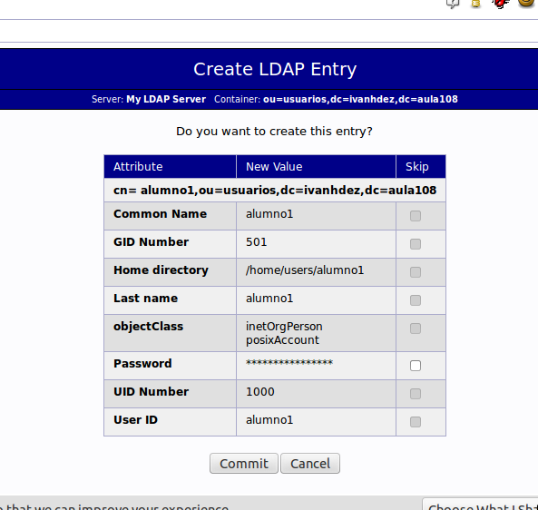

- Módulo: Administración de Sistemas Operativos
- Título del trabajo Servidor LDAP
- Componentes del grupo: Iván José Hernández Regalado
- Curso Académico: 2014/2015
- Fecha de entrega: 3 de Noviembre de 2014
Creamos una MV Linux que la usaremos de servidor y la ponemos en modo puente con la siguiente configuración.
Lo siguiente que hacemos es instalar el LDAP usando el siguiente comando.
Con el siguiente comando vamos a configurar el LDAP.
Comenzamos especificando la contraseña que queremos para nuestro usuario admin del servidor LDAP.
Luego omitimos la configuración del OpenLDAP.
Ahora especificamos el nombre de dominio de nuestro servidor y el nombre de organización.
Elegimos que nuestro motor de base de datos sea BDB.
Marcamos que no se borre la base de datos cuando se purgue el paquete sladp.
Elegimos que mueva la base de datos antigua por si tubieramos una anterior.
La última ventana será la de permitir el protocolo LDAPv2 que diremos que no.
Además usamos el siguiente comando para automatizar el proceso de arranque del LDAP por si no existiera y reiniciamos el servicio LDAP.

No olvidarse de cambiar el fichero /etc/hosts con nuestro nombre de dominio especificado durante la instalación del LDAP.
Para que el phpLDAPadmin funcione correctamente debemos tener instalado el apache, usamos el siguiente comando para instalarlo.
Ahora instalamos el phpLDAPadmin desde el synaptic o por comandos y comprobamos que podemos entrar desde el navegador.

Tenemos que modificar el archivo /etc/phpldapadmin/config.php antes de poder entrar con nuestro usuario creado durante la configuración del LDAP de la siguiente manera:

Comprobamos ahora que podemos acceder con nuestros datos en el phpLDAPadmin.
También modificar el archivo /usr/share/phpldapadmin/lib/TemplateRender.php añadiendo "_custom" al "password_hash" para arreglar el error que hay en la creación de usuarios de phpLDAPadmin.
Vamos a crear dos unidades organizativas "Generic: Organisational Unit", unos para grupos y otro para usuarios.
Dentro del ou:grupos vamos a crear dos hijos "Generic: Posix Group", uno para profesores y otro para alumnos.
Dentro del ou:usuarios vamos a crear usuarios "Generic: User Account" para meterlos dentro de los grupos alumnos o profesores especificandolo en el "GID Number".

Ahora vamos a comprobar desde un cliente que podemos acceder a los datos que acabamos de crear usando el JXplorer. Una vez instalado lo ejecutamos y le damos a la opción de conectar y ponemos los datos de la siguiente manera.